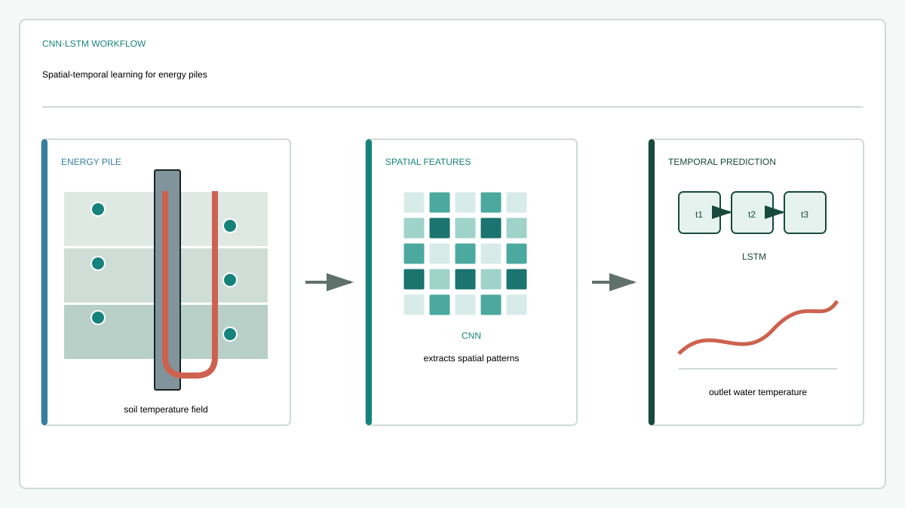

Journal article
Outlet water temperature prediction of energy pile based on spatial-temporal feature extraction through CNN–LSTM hybrid model
Research at a glance
{kind=link}

Abstract
Energy pile is a novel ground heat exchanger for ground source heat pump (GSHP) systems. Prediction of the energy pile outlet water temperature is essential for the efficient operation of GSHP systems. In this study, by establishing a convolutional neural network (CNN) and long short-term memory (LSTM) hybrid model (CNN-LSTM), the spatial-temporal feature of the soil temperature field (STF) was creatively considered to predict the outlet water temperature. The inlet and outlet water temperatures and the surrounding STF data of the energy pile were obtained through finite element simulation and used as the model training datasets. By building the CNN-LSTM model, the spatial-temporal features in datasets could be extracted, leading to more accurate prediction results than other benchmark models. For instance, the excellent prediction accuracy of CNN-LSTM is reflected by an average R² value of 96.252%, which is higher than the values of the LSTM, CNN, ANN, and SimpleRNN models by 2.326%, 3.527%, 4.585%, and 5.755%, respectively. Furthermore, the influence of different STF datasets on the prediction accuracy was investigated. The corresponding dataset acquisition method based on the optimized sensor arrangement scheme was proposed, which can improve the information extraction performance of the CNN-LSTM model.
Keywords
Recommended citation
Weiyi Zhang, Haiyang Zhou, Xiaohua Bao, and Hongzhi Cui (2023). Outlet water temperature prediction of energy pile based on spatial-temporal feature extraction through CNN–LSTM hybrid model. Energy, 264, 126190. https://doi.org/10.1016/j.energy.2022.126190